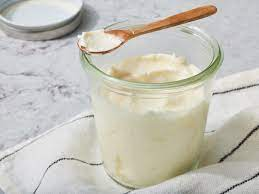

Butter

Description
Everybody loves to have a tasty slice of bread with some butter on top. But whats even better than store bought butter?
Homemade of course!
This recipe will show you just how easy it is to bring store bought and restaurant Butter
to your dining table at home.
Ingredients
- 2 cups heavy cream
- 1/4 teaspoon salt optional
Instructions
- Pour heavy cream into food processor or blender. Process or blend on high until Butter
separates, about 10 minutes.
- Strain of liquid, then press butter into a small bowl with the back of a spoon to Remove
excess liquid. Season with salt if needed.